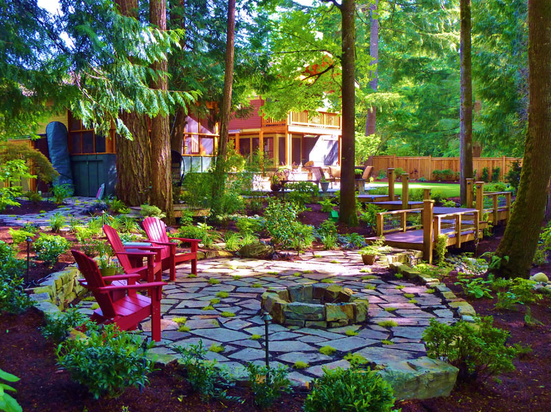

Interesting things
As a lifelong learn-it-all, I pay attention to almost everything, but here are some highlights from the greater world, along with a few selections at the bottom should you need to get out more:
HOME | INTERESTS | REFLECTIONS | RESUME | GUESTBOOK
As a lifelong learn-it-all, I pay attention to almost everything, but here are some highlights from the greater world, along with a few selections at the bottom should you need to get out more:
|
Baseball at ESPN | |
|
FARK | |
 |
|
Dwarf Fortress |
 |
|
NewEGG |
|
Edmonds Community College | |
| Hiking | Fishing | Washington, Outdoors | Buying Things Cheap (eBay) | ||
I love carpentry too. I built this with my previous employer in Sahalee, Washington. You'll have a hard time finding something there I didn't have a hand in. | ||